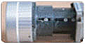
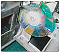

| 오염된 부품 | 구성부품 | 기능 | 클리닝 필요성 |
|---|---|---|---|

|
멀티렌즈 | 램프의 빛을 굴절시키는 기능을 합니다. | 램프와 가장 가까운 글라스로서 램프열에 의해 먼지가 눌러붙어 그을리게 될 수 있습니다. |
| PBS 글라스 | 장시간 켜두면 PBS렌즈가 열을 견디지 못하고 파손되거나, 소홀한 관리로 먼지 등에 의해 훼손될 수 있음 | ||
 |
반사경 | 램프를 통해 들어오는 빛을 분해하여 LED 액정까지 도달할 수 있도록 합니다. | 빛을 투과시키는 장치의 상태가 양호하지 않으면 특정 색상이 흐리게 나옵니다. |
| LED 패널 폴라로이드 글라스 |
LED 패널은 RED, GREEN, BLUE 세 가지로 구성되어 있으며, 시각정보를 변환시켜 전달하는 매우 중요한 역할을 합니다. | 파손되면 수직으로 줄이 생기거나 화면이 점처럼 보일 수 있고, 특정색상이 안나올 수 있습니다. | |
|  | 렌즈 | 빛을 스크린에 쏘아주는 기능을 합니다. | 필터로도 여과되지 않는 미세먼지가 렌즈의 부분을 오염시켜 화질을 떨어뜨리는 원인이 됩니다. |
|  | 칼라휠 | 램프에 의해 쏘아진 빛이 칼라 휠을 통해 DMD칩까지 전해져 색상을 구현합니다. | 빛이 통과하는 칼라휠에 미세먼지가 끼면 색감이 제대로 표현되지 않습니다. |
| FAN | 램프로 인해 내부온도가 300도에 이르게 되는 것을 외부의 찬공기를 이용하여(공냉식) 외부로 발산하는 역할을 합니다. | 먼지로 인해 팬 내부 모터가 동작되지 않으면 내부 온도상승으로 갑자기 꺼지는 현상이 발생할 수 있습니다. |